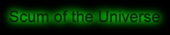

a space adventure
About
This game is a work in progress. It is still alpha quality. However,
you can fly around and shoot some aliens already.
The most important thing about it, is that it has an open game engine,
so anyone can easily add new levels, enemies, etc. by editing the
simple textual files.
If you have any wish to participate in the project (make graphics, give
suggestions, redesign this website), please
contact me at mbabuskov@yahoo.com.
The game concept is
similar to famuos Elite. You go from planet to planet, solving quests,
trading, and fighting. The fight is classic 2D vertical scrolling
shoot'em up instead of Elite's dogfight. So you can say it's a mix
between Elite and Space Invaders. You can read about game concepts here
Download
There is any playable version available. Please come back later.